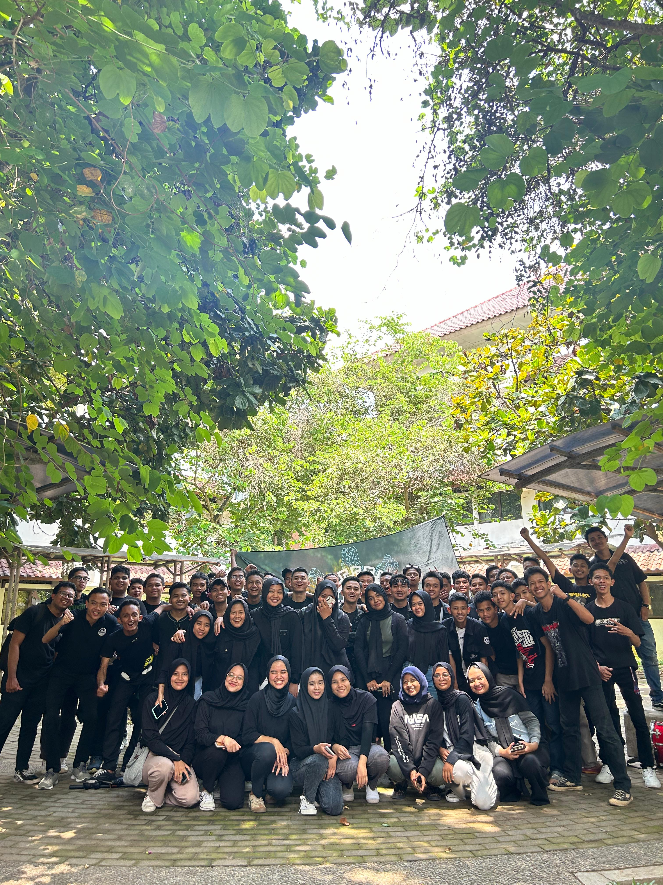
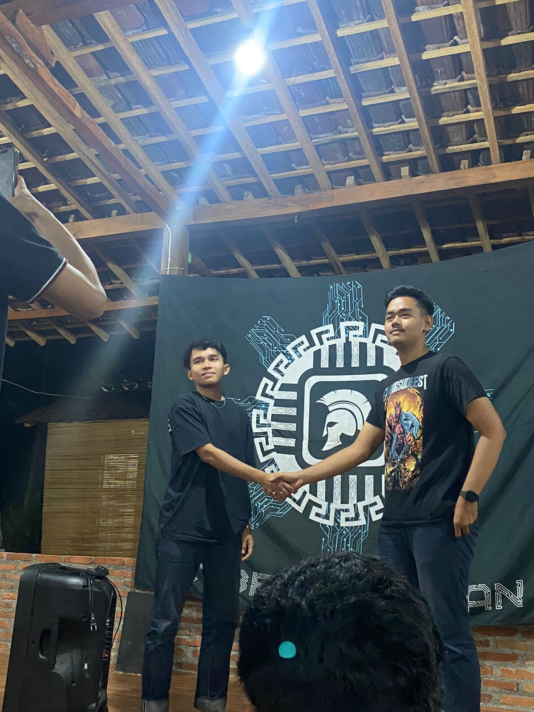
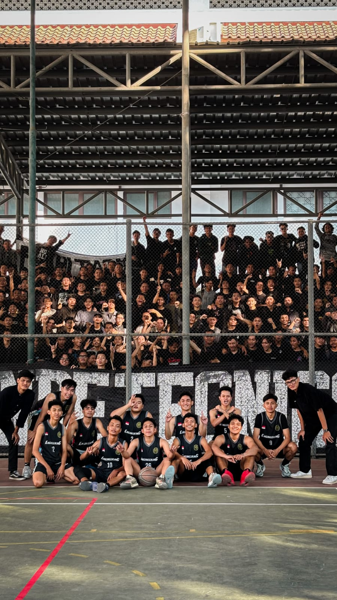

CYBER SPARTAN

Cyber Spartan adalah Suatu komunitas yang ada didalam Fakultas teknik Prodi Teknologi informasi, yang berfokus kepada supporteran atau arak-arakan. Berdiri sejak 4 November 2019 sampai sekarang dan masih sangat eksis atau masih sering mengikuti event event yang ada didalam fakultas maupun prodi itu sendiri.
Foto ujung kiri dan ujung kanan bawah ini mungkin salah satu dokumentasi saat arak arakan dan supporteran yang diselenggarakan oleh BEM TEKNIK dan diikuti oleh beberapa prodi yang ada, dilaksanakan pada bulan Desember 2023. Untuk foto yang di tengah itu merupakan serah terima jabatan Ketua CYBER SPARTAN pada bulan november 2023.


